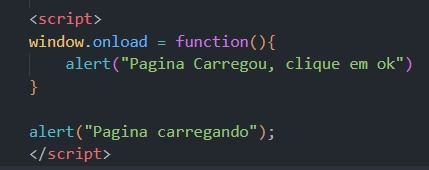

Percebe-se o alerta que deu na pagina? então, esse é o evento Onload, o evento Onload é um evento em JavaScript que é acionado quando um recurso, como uma imagem, um script ou uma página web completa, terminou de carregar no navegador.
O evento "onload" é frequentemente usado para executar ações após o carregamento completo de uma página ou recurso. Por exemplo, se você quiser executar um script JavaScript depois que a página tiver sido carregada completamente, você pode usar o evento "onload" para garantir que o script seja executado somente após o carregamento completo da página. Para adicionar um ouvinte de eventos "onload" em um elemento HTML, você pode usar a propriedade "onload" do elemento, por exemplo:
Esse é o codigo do Onload para dar o Alerta!